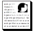

StepTalk DownloadsContents
[ Introduction | News | Documentation | Download StepTalk | Related links ]
For installation instructions please read the included 'README' file. StepTalk is licensed under the GNU LGPL
Packages
You may read the latest ChangeLog
| StepTalk Source | |
|---|---|
| StepTalk-0.8.1.tar.gz | 2003 Nov 24 - Version 0.8.1 - Added STConversation. |
| StepTalk-0.8.0fix.tar.gz | 2003 Aug 13 - Version 0.8.0 - changed to a framework (fixed package). |
| StepTalk-0.7.2pre.tar.gz | 2003 Jun 17 - Prerelease of 0.7.2 |
| StepTalk-20030513.tar.gz | 2003 May 13 - Development snapshot with framework scripting support. |
| Support | |
| See source directory ApplicationScripting/Support. | Files containing code for loading application scripting support. |
CVS
StepTalk sources are also available by CVS:
CVSROOT=":pserver:anoncvs@subversions.gnu.org:/cvsroot/gnustep"
cvs -z3 co StepTalk
The CVS tree can be browsed here.